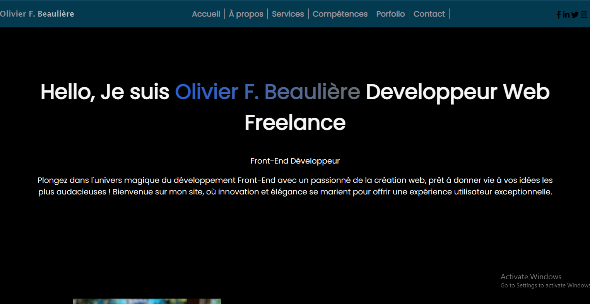

Mon site
Année : 2022
Informations
Ce projet consiste en la création d'un site web personnel pour Olivier F. Beaulière, un développeur web freelance. Le site vise à présenter son profil professionnel, ses compétences en développement web, ainsi que ses services aux visiteurs.
Présentation personnelle :
Le site offre une présentation personnelle d'Olivier F. Beaulière, mettant en avant ses antécédents académiques et sa passion pour le développement web.Navigation :
Une barre de navigation est incluse pour permettre aux visiteurs de naviguer facilement vers différentes sections du site, y compris la page d'accueil, la section "À propos", les services, les compétences, le portfolio et les coordonnées.Services :
Une section dédiée aux services est intégrée, décrivant les compétences d'Olivier dans la création de sites web responsives, de sites web statiques, d'animations et d'interactivité, ainsi que dans la formation de débutants en développement web.Icônes et SVG :
Des icônes SVG sont utilisées pour illustrer visuellement les différents services proposés, ajoutant un élément de design au site.Réseaux sociaux :
Des liens vers les profils de médias sociaux d'Olivier sont inclus, permettant aux visiteurs de le suivre sur des plateformes comme LinkedIn.Design élégant :
Le site est conçu de manière à offrir une expérience utilisateur élégante, avec une utilisation de la police de caractères "Poppins" de Google Fonts pour une apparence professionnelleTechnologies
- HTML
- CSS
- Javascript